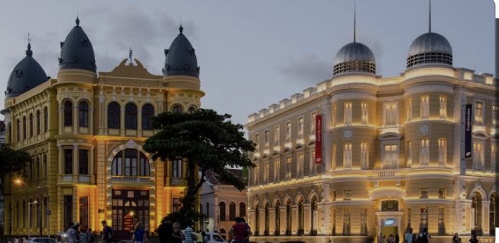

PRAÇA DO MARCO ZERO
O Marco Zero no Recife Antigo é um dos pontos turísticos mais importantes para quem deseja conhecer a historia dessa linda cidade.
A HISTÓRIA DO MARCO ZERO
A Praça Rio Branco, também conhecida como Marco Zero, é um espaço público localizado no bairro do Recife da cidade homônima, capital de Pernambuco. O local fica próximo ao Porto do Recife e abriga o Marco Zero da cidade do Recife. É deste marco que são feitas todas as medidas oficiais de distâncias rodoviárias locais.